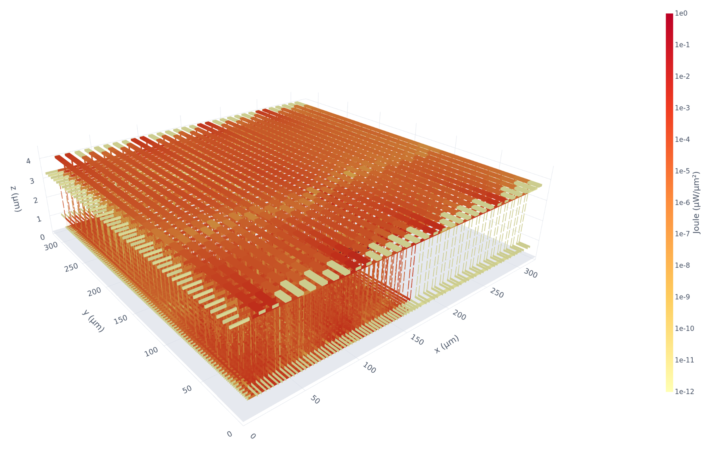
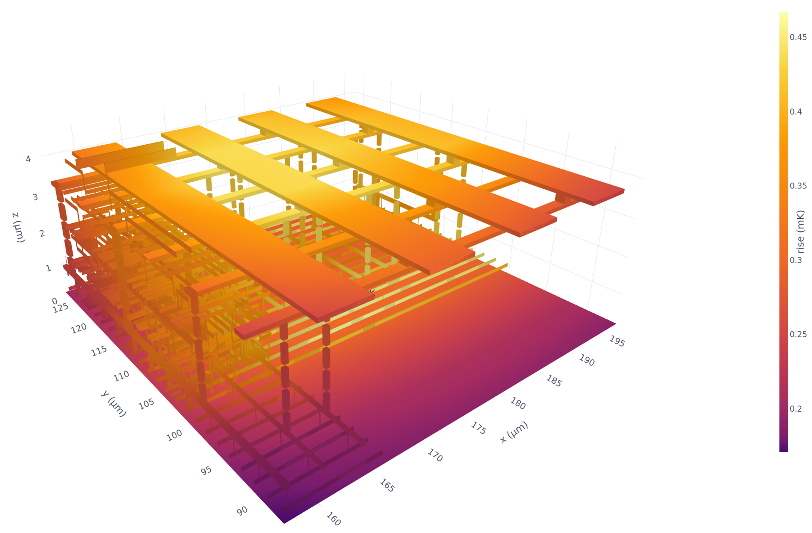
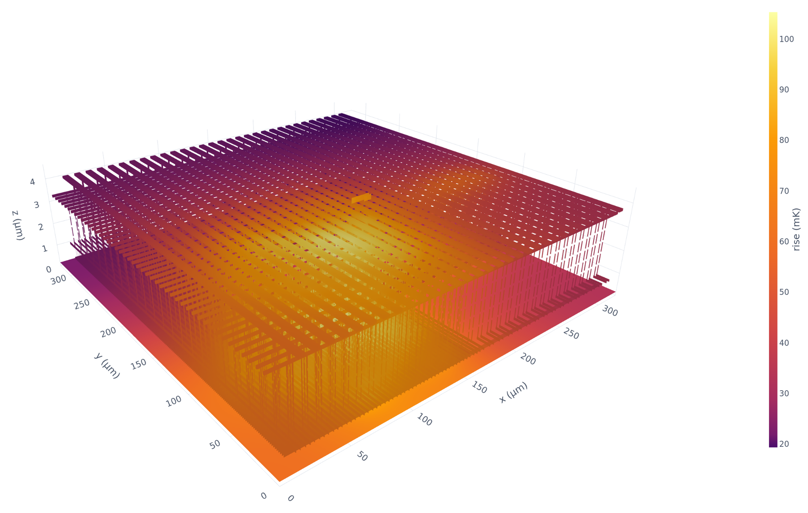
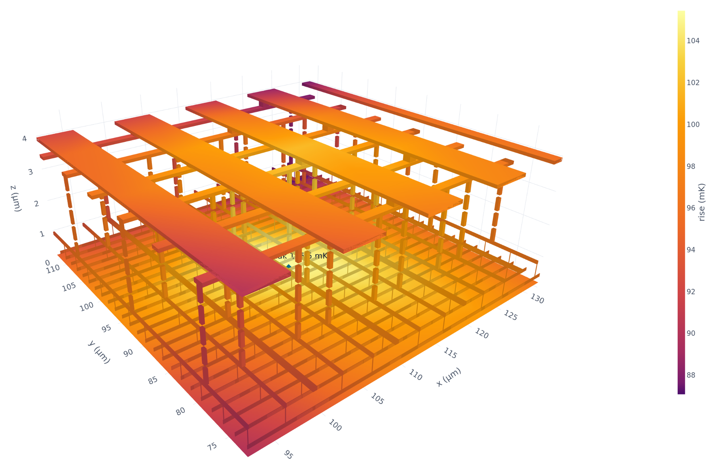
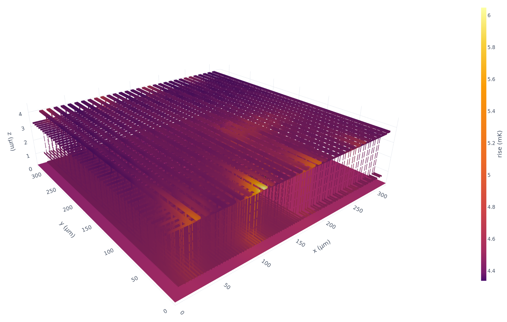
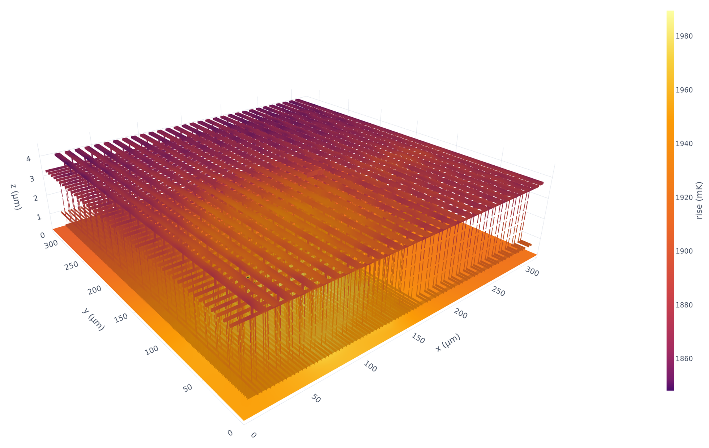

Power-grid Joule heating: the heat of every VDD and VSS wire on a processor die
Every power-grid wire and via as its own heat source, on the processor core of WP-106, on a bare die and in a package.
The supply current that feeds the cells also heats the power-grid wires that carry it. ThermStack takes the I²R heat of every segment of the VDD and VSS grid, 32,272 wires and vias on a processor-core die, and puts it into the metal layer where it is dissipated. It then solves the grid heat alone and the grid heat together with the cell power. On this core the grid dissipates 7.5 µW, 0.24 % of the cell power. On a bare die that raises the peak by 0.12 mK. In a flip-chip package it raises it by 4.5 mK, almost all of it as a uniform offset, and the hot spot does not move.
Where the grid heat is generated
Each wire of the power grid is its own heat source, in its own metal layer.
The design is the placed-and-routed RISC processor core of WP-106: a 0.32 × 0.32 mm die, about 8,300 cells, nine metal layers and 3.18 mW of static cell power. From the static current in each grid segment, ThermStack computes P = I²R. A wire's heat is spread along its own length in its metal layer, and a via's heat goes into its cut layer. The grid heat equals the supply power minus the power used by the cells, to one part in 1010.

| Layer | Grid segments | Joule heat | Share |
|---|---|---|---|
| M1 rails | 16,593 | 3.96 µW | 52.8 % |
| M8 straps | 760 | 2.38 µW | 31.7 % |
| M7 straps | 1,713 | 0.87 µW | 11.5 % |
| M2 | 4,413 | 0.21 µW | 2.9 % |
| Vias V1–V7 | 8,793 | 0.08 µW | 1.1 % |
| Total | 32,272 | 7.50 µW | 100 % |
The temperature field of the grid heat by itself
Solving the grid heat alone shows what it adds and where. On a bare die on a heat sink the grid heat stays local: the rise is largest in the metal layers that dissipate it and falls off toward the device layer. The highest rise, 2.3 mK, is on the upper straps next to the supply connections at the die edge, where the current of the whole grid comes in. In the device layer the grid heat adds at most 0.31 mK, under the busiest first-metal rails.

The combined field: the same hot spot, slightly warmer
With the cell power and the grid heat together, the field is the cell-power field plus the Joule-only field: the combined run and the sum of the two separate runs agree to 10−8 K. The device-layer peak rises from 105.34 to 105.46 mK and stays at the same place. The grid heat does not create a new hot spot on this core.


In a package the same 7.5 µW lifts the whole die
The same die was mounted in a flip-chip chip-scale package. Here the heat has to cross the package before it leaves, so the grid heat raises the whole die, not only the wires. The grid heat adds 4.5 mK at the peak; 4.49 mK of that is spread almost evenly over the die. Per milliwatt, the grid heat raises the package peak by 0.60 K, close to the 0.62 K per milliwatt of the cell power. In the package, where a watt is dissipated matters less than how many watts there are.


| Mounting | Peak, cell power | Peak, cell power + grid heat | Added by grid heat | Grid heat alone, device layer |
|---|---|---|---|---|
| Bare die on a heat sink | 105.34 mK | 105.46 mK | +0.12 mK (+0.11 %) | 0.10 mK mean, 0.31 mK max |
| Flip-chip chip-scale package | 1,985.43 mK | 1,989.93 mK | +4.50 mK (+0.23 %) | 4.49 mK mean, 4.69 mK max |
Rises are above ambient, at the device layer unless stated. Static (average) supply currents, steady state, 5 µm resolution; the 3D views colour each wire by the rise of its layer at that resolution. Joule heat in the signal wires is not added: it is already part of the cell switching power. Resistance is held at its nominal value; at these rises copper resistance changes by far less than 1 %, so there is no feedback to model.